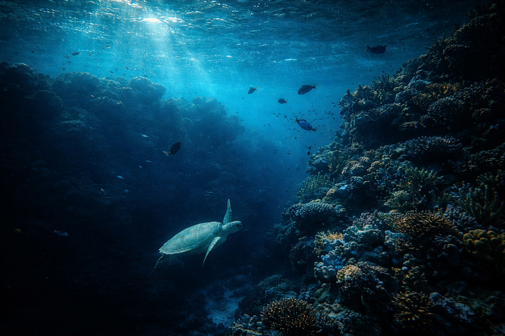
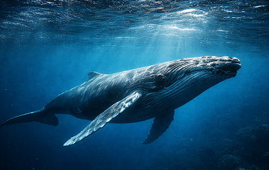
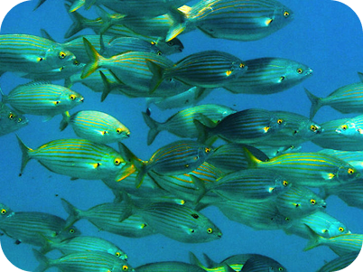
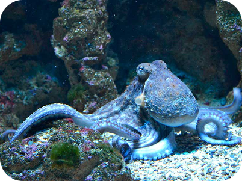
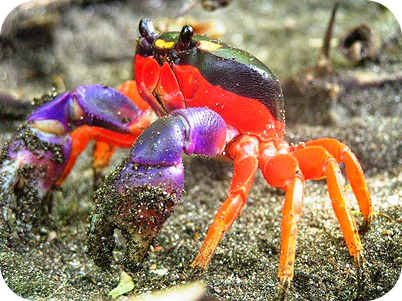
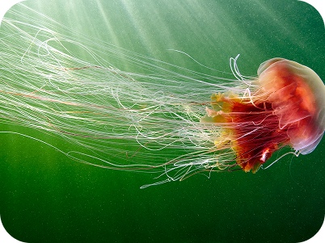
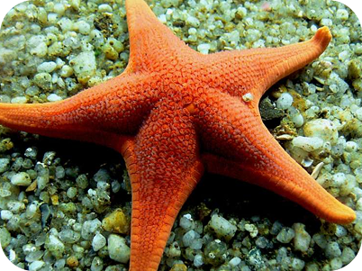

6
Categorías
Grupos de animales explorados


Sumergite en la enciclopedia digital más completa del mundo sobre la vida acuática. Descubrí, aprendé y protegé la increíble biodiversidad de nuestros océanos.
Empezá a explorar →
Grupos de animales explorados

Especies destacadas

Amenazas documentadas
Navegá por seis grandes categorías de animales acuáticos, cada una revelando un rincón único de la biodiversidad submarina.

Los gobernantes de sangre caliente de las profundidades

Los vertebrados más diversos del océano

Maestros del camuflaje y la adaptación

Arquitectos acorazados del fondo marino

Etéreos viajeros y constructores de arrecifes

Maravillas espinosas del fondo oceánico
Cada especie desempeña un rol vital en el equilibrio de los ecosistemas marinos. Conocé las amenazas que enfrentan y cómo podemos ayudar a preservar la biodiversidad acuática para las futuras generaciones.
Descubrí todas las amenazas